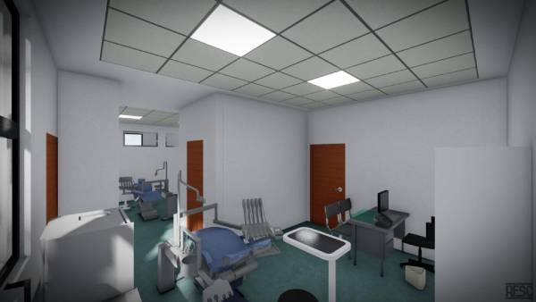

Avance programado
0%
Ponderado por monto contractual
Centro de Salud San Marcos · Contrato 018-2026-MDSM
Al 04 de agosto de 2026, el Centro de Salud San Marcos presenta el avance consolidado de sus ocho partidas, comparado contra la programación contractual. El tablero identifica brechas, valorización acumulada, responsables y causas para priorizar decisiones en la reunión semanal de supervisión. La ruta crítica concentra los frentes estructurales que requieren seguimiento inmediato por su impacto en el plazo. Los filtros permiten revisar retrasos relevantes o actividades críticas. La información se calcula con ponderación por monto contractual y muestra el corte. El historial temporal de ejecución no fue proporcionado; por ello, la curva S ejecutada se representa al corte.

Ámbar: brecha mayor a 10 p.p. · Rojo: brecha mayor a 20 p.p. · La etiqueta «Ruta crítica» identifica las partidas críticas.
| Partida | Unidad | Metrado ejecutado / contractual | Avance | Brecha | Días de atraso | Monto valorizado | Responsable |
|---|